方法一：方法 登录【工行个人网银】--【我的帐户】 --【查询电子回单】详细信息。
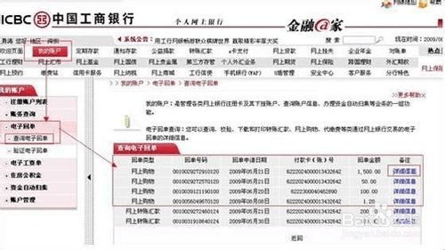
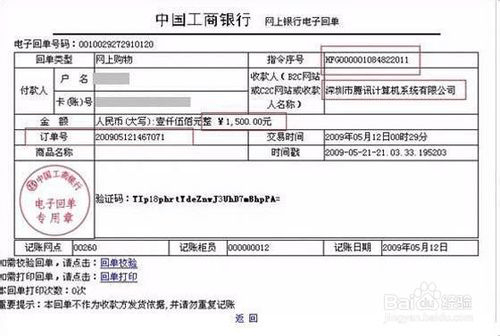
方法二：方法 查询路径：【登录个人网上银行】 【工银e支付】【订单支付明细查询】 【选择查询日期段】查询。

方法三： 工行一点通/快捷查询：查询路径：【登录个人网上银行】 【标准版】【我的账户】 【账务查询】明细查询，选择起始日期和截止日期【查询】。
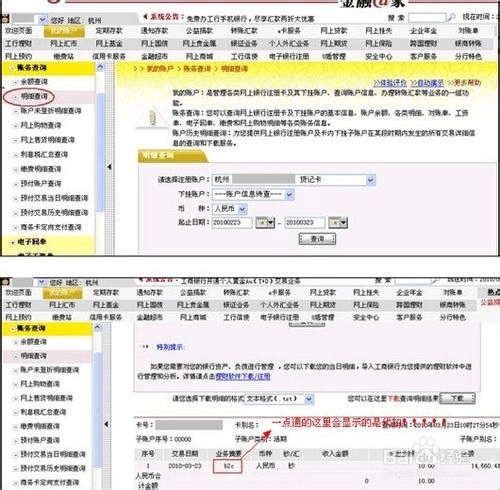
方法一：方法 登录【工行个人网银】--【我的帐户】 --【查询电子回单】详细信息。
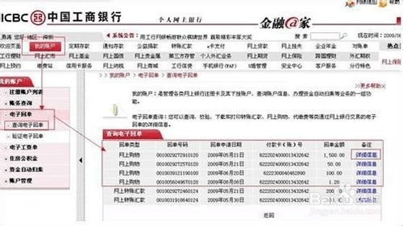
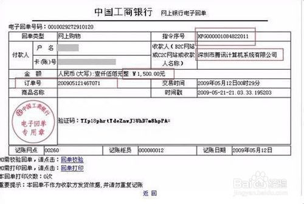
方法二：方法 查询路径：【登录个人网上银行】 【工银e支付】【订单支付明细查询】 【选择查询日期段】查询。
方法三： 工行一点通/快捷查询：查询路径：【登录个人网上银行】 【标准版】【我的账户】 【账务查询】明细查询，选择起始日期和截止日期【查询】。
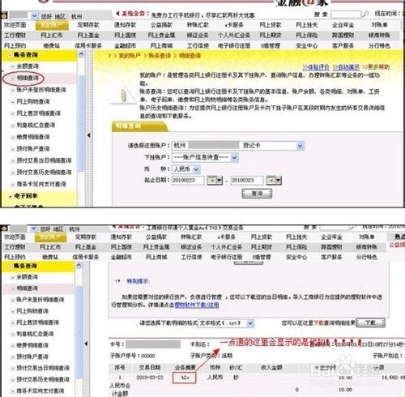
招行网上支付订单号的查询分别从大众版、专业版、进行介绍。
大众版：个人银行大众版—【一卡通】— 【网上支付】—【网上支付交易查询】 —选择时间段—查询。
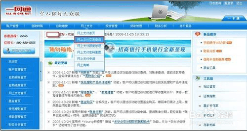
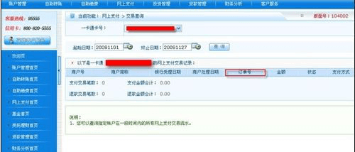
专业版：个人银行专业版—【网上支付】— 【一卡通支付交易查询】—选择【时间段】 —【查询】
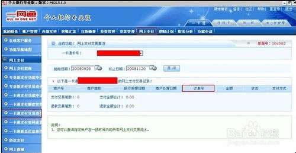
登陆建设银行网上银行输入【登录信息】点击 【客户服务】—【日志查询】— 【选择时间】-【查询订单号】查看详情。
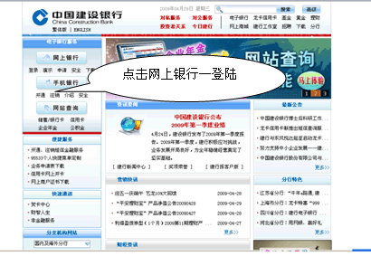
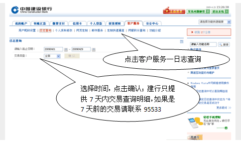
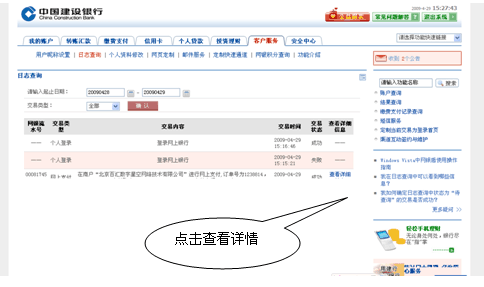
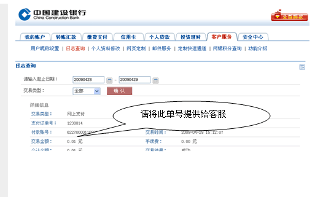
登录农业银行点击【缴费支付】— 【网上支付交易查询】选择日期，点击【确定】 这里的订单编号就是快捷充值订单号
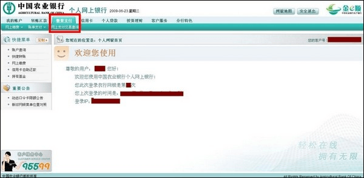
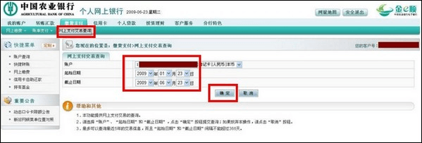
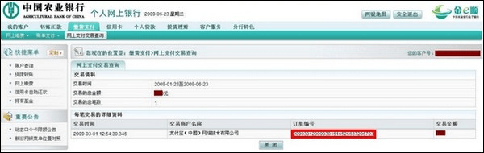
登录 中国银行个人网上银行页面，点击【电子支付】-- 【网上支付】--【网上支付记录】 --设定搜索日期范围后点击【查询】；
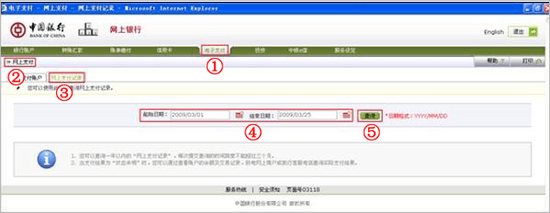
此页面将显示您的网上支付【订单号】，如需查看详情， 点击对应订单的【订单号】即可；

情页面将显示包括【支付时间】、【订单号】、【交易号】、【商户名称】、【帐户别名】、【支付帐号】、【交易货币】、交易金额和交易状态等”。
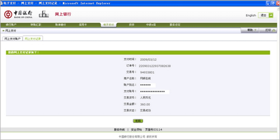
登陆交行网站，点击个人网银登陆，输入登录信息，选择网上银【支付交易查询】 —选择起始、截止时间，点击【下一步】
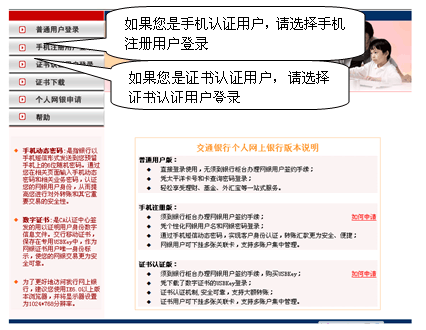
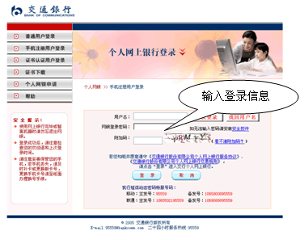
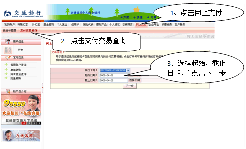
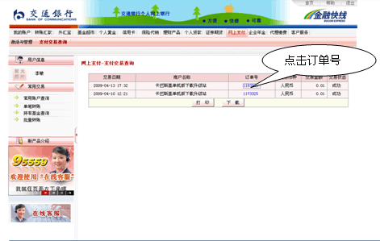
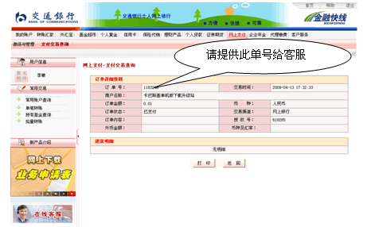
大众版：登录民生银行大众版【个人网银】（点此进入查询）—— 【查询服务】——【网上支付订单查询】 ——选择查询时间段

贵宾版：登录民生银行贵宾版【个人网银】—— 【查询服务】——【网上支付订单查询】 ——选择查询时间段
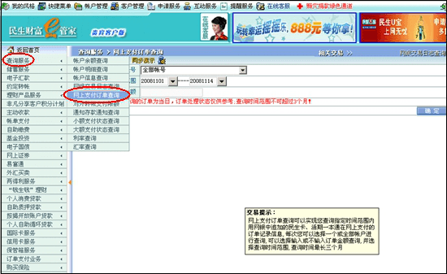
登录中信银行官网点击【转账支付】— 【网上支付】—【订单明细查询】 输入起始日期，截止日期，点击【查询】
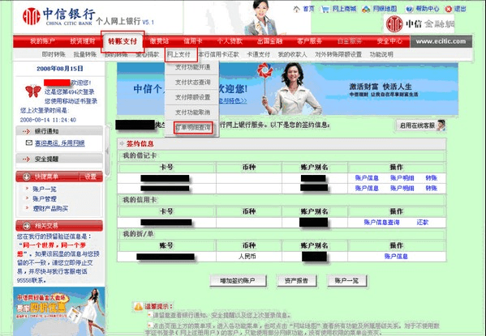
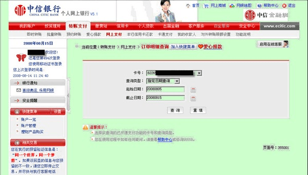
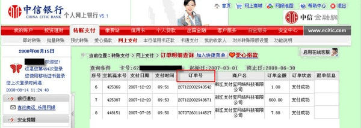
获取广发银行快捷充值订单号的具体步骤如下：
1.登陆广发银行网银页面，点击上方的【网上支付】；
2.点击【网上支付管理】后，会再出现一个选择框， 选择【网上支付查询】；
3.选择帐号与查询的时间后，点击【查询】；
4.选择您需要查询的交易信息进行截图即可。
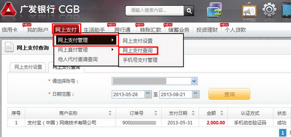
获取邮政储蓄银行快捷充值订单号的具体步骤如下：
1.点击邮政储蓄网银页面上方的【网上支付】；
2.点击网上支付栏下一行的【网上支付交易查询】；
3.选择查询时间点击【查询】；
4.选择您需要查询的交易信息进行截图即可。
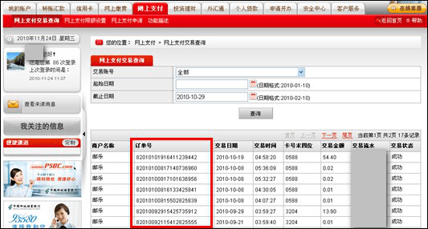
获取光大银行快捷充值订单号的具体步骤如下：
1.点击光大银行网银页面上方的【更多功能】；
2.在选择框中选择【电子支付】后会出现另一个选择框，点击【电子支付】；
3.选择您需要查询的该笔交易信息进行截图即可。
4.选择您需要查询的交易信息进行截图即可。
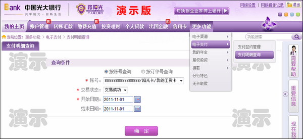
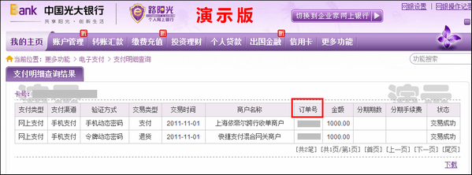
获取平安银行快捷充值订单号的具体步骤如下：
1.点击平安银行个人网银页面上方的【网上支付】；
2.点击左侧【网上支付查询】；
3.选择查询时间点击【查询】；
4.选择您需要查询的交易明细下载，并进行截图即可。
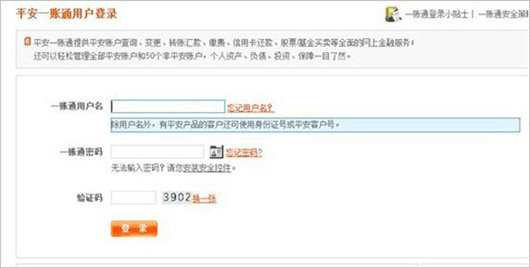
获取浦发银行快捷充值订单号的具体步骤如下：
1.点击浦发银行网银页面左侧的【缴费与支付】；
2.在“网上支付”栏选择【支付明细查询】；
3.选择您需要查询的该笔交易信息进行截图即可。
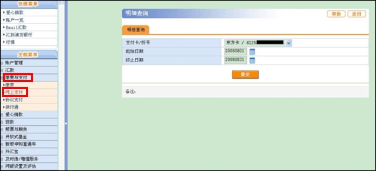
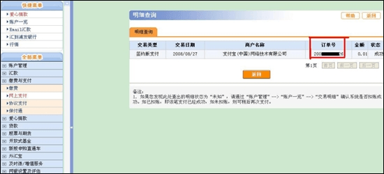
获取兴业银行快捷充值订单号的具体步骤如下：
1.点击兴业银行网银页面顶端的【网上支付】；
2.在网上支付栏的下一行点击【网上支付明细查询】；
3.选择您需要查询的银行账户点击【下一步】；
4.选择查询时间点击【查询】；
5.选择您需要查询的该笔交易信息进行截图即可。
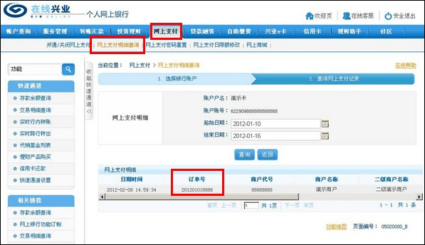